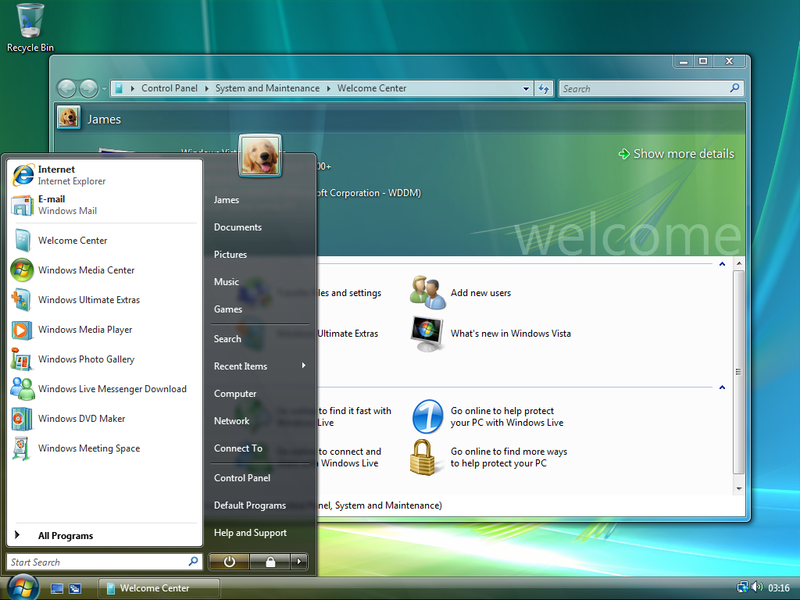

Screenshot of Windows Vista. It is five years of evolution beyond Windows XP, but has many of the same limitations. Whether it will still be prone to viruses and malware is one of the biggest questions.
Microsoft's Windows Vista was released in December, 2006. The first major release of Windows since Windows XP in 2001, it is an evolutionary step forward in many ways. Every component was improved with new features ; a glassy 3-D user interface, integrated search, improved kernel and a new version of Internet Explorer.
A new IBM Thinkpad computer came with Vista Premium and I spent several hours with it. Here are my impressions:
When I turned on the computer for the first time, it spent five minutes checking its performance before I could do anything; it's rather ironic that this task is slowing down my computer.
Internet Explorer provided two toolbar textboxes to search the web, both using MSN's search. When I create a new tab using the shortcut key after I launch IE, it would say it could not connect, even though the computer had long-ago established an Internet connection. Apparently, the typing part of IE was initialized before the networking part.
Windows Update wanted to install an Office 2003 service pack even though I could find no Office 2003 installed. Office 2007 was installed as demoware, even though I chose not to purchase it.
There was a tool to resize the hard drive to make room for Linux, but it insisted on reserving 44 gigs of free space for Vista!
The disk defragmentation tool said my hard drive contained 3055 fragmented files and 13,265 “excess fragments” and that the drive was “heavily fragmented”. I guess when Vista checked the computer's performance, it didn't notice the filesystem fragmentation issues. The defrag tool was nagware and kept encouraging me to purchase a better version. (In Linux, the file systems have much less fragmentation because the code is smarter.19 )
I found seven copies of system files like “i8042prt.sys”.
I wanted to get Windows Media to play my OGG audio files. I told Windows Media I want to install plugins and it took me to a Microsoft-maintained web page with links to 3rd party plugins. I find one and install it. Once installed, I cannot see the plugin in the media player's list of installed plugins.
I downloaded an OGG file in Internet Explorer, and Windows Media finds and plays the file, but I can't see where it was put. I use the search feature to look for it, but search doesn't find it. I try to refresh the index, and it warns me that performance will be slow because it is a background task, which is true because it doesn't even attempt to rebuild it.
I checked on the Windows Media settings for ripping music. The default is to rip into 128 kbps WMA, which has never been good enough for archival purposes. It doesn't allow me to rip into anything higher than 192 kbps. I then discover that there are four types of Windows Media, including an option to use variable bit rate. (VBR encoding uses more or less bits depending on how much the music needs at that moment to maintain a certain level of quality.) The default is inexplicably not to use that clever feature. Windows Media allows me to rip into MP3, but I can only set four levels of quality, and I can't change any other MP3 encoding options like I can on Linux. (Microsoft got sued for billions of dollars for minimal MP3 support.)
There are now three status icons for wireless Internet, one more than in Windows XP. Let no one say that Vista is not an upgrade: “Now with more 802.11 status icons!”
After Vista Service Pack 1 is released, I go to Windows Update to try to download it. It isn't there, and shows me no new updates. I log-off, and it tells me it is installing a bunch of updates — ones that it just told me it didn't have.
I have pages of notes like this from just a few hours with the OS. A friend bought Vista on a new HP computer, and while he could see the Internet, he couldn't really transfer data because the Norton anti-virus nagware that came with the computer was incompatible with the Vista firewall. This former MS programmer needed to call HP to get help because the symptom of “sort-of” Internet access didn't lend itself to any obvious solutions. Removing the nagware solved the problem, but that process took 40 minutes — building a high-performance uninstallation program on Windows is apparently nontrivial, even for a company with their act together enough to build a virus scanner.
While Vista is the next generation of Windows XP, it still has the same fundamental limitations. It will have driver reliability issues because of its backward compatibility constraints and complicated code. It will become obsolete because new hardware is released continuously, but Microsoft puts products into a maintenance mode after they ship, and places most engineering resources onto the future source of revenue.20
Beyond the reliability and interoperability issues, Vista's biggest limitation is that it doesn't contain any major functionality beyond what we all think of as Windows today. If you want an audio creation tool or educational software, Windows is not the answer.
Like the Linux kernel itself, a Linux distribution has all of its code in one big tree. This means that upon installation of a new version, all the applications work out of the box because they have been built and tested together. A distribution can fix any bug in any of its code because it has total access to it all. By contrast, Russ Cooper, a senior information security analyst at Cybertrust, has said that:
I'm going to Vista...when my VPN supplier tells me that they have drivers that work, and when my anti-virus vendor tells me that they have non-beta versions that work.Microsoft has to spend much more on backward compatibility than Linux does, and the huge cost has imperfect results because Microsoft doesn't have the ability to fix code in third-party applications. In a free software world, bugs can be fixed anywhere, and therefore in the proper place.
In addition to the larger variety of applications in Linux, you find more choices all throughout the free software stack. The user interface is more customizable than Windows or the Mac, and there are communities around even the tiniest parts of a Linux operating system, like themes: every Linux desktop can be personalized to a much greater degree. I can even download a theme to make my computer have a glassy user interface like Vista, or a user interface like the Mac, just two of many choices.
A new version of Windows used to mean a lot because new hardware and software was made a part of the platform. However, because of the dearth and death of third-party Windows developers, and because most developers are building applications on the Internet, a new version of Windows matters a lot less these days.
Furthermore, because deployments of Windows take years, developers are left in a quandary: “If I write code that depends on a new Windows feature, what happens if my code is running on an old version of Windows?” Free software propagates with less friction, therefore developers can more easily take advantage of new features, and assume their existence. Someone remarked to me that Vista is “Different but not different.” They've tweaked the icons and moved things around, but the same functionality is there. I remember the OS wars of the past, and it seems like we are in for another one. Grab popcorn!